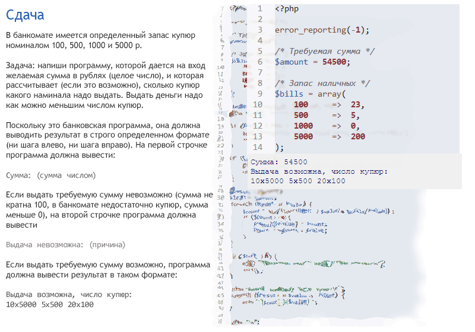
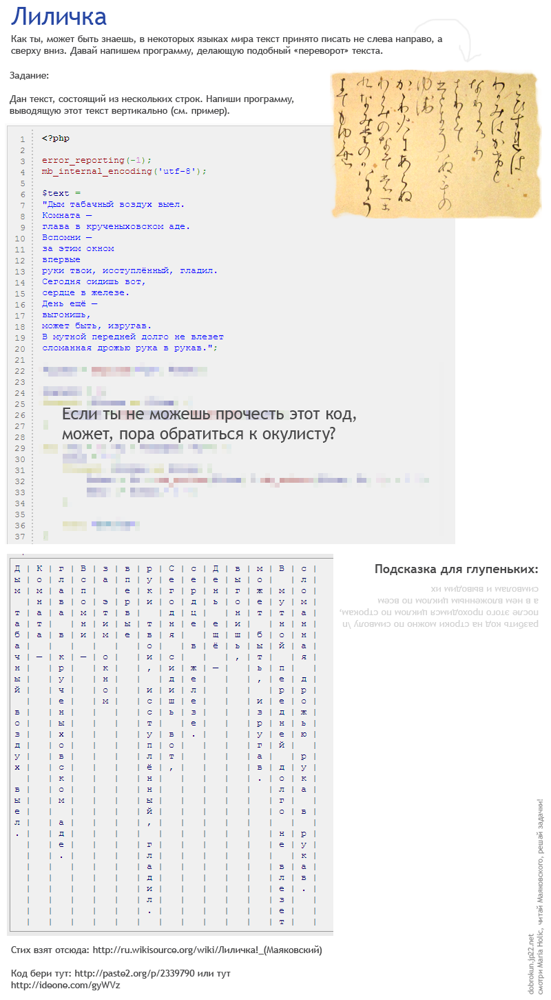
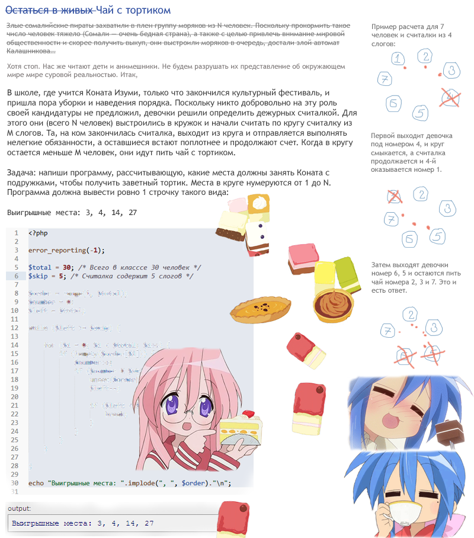
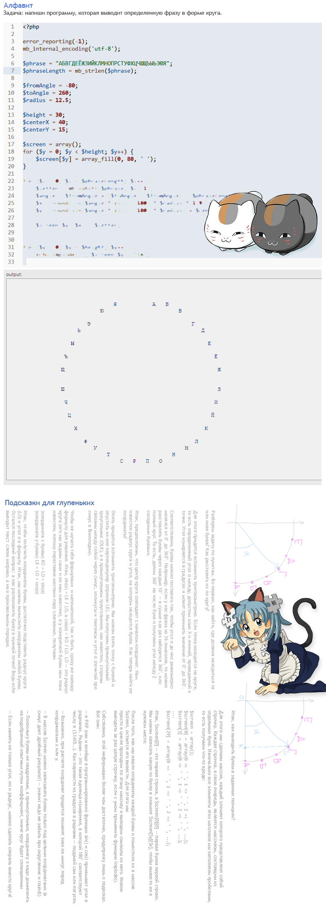
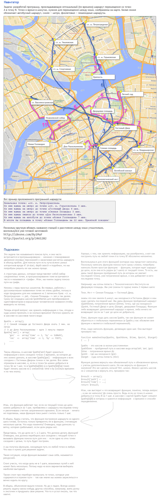

Слишком просто? Ок, давай усложним задачу. Добавим в банкомат банкноты номиналом 200 и 2000 р. После чего выставляем такое число банкнот: 1 по 5000, 4 по 2000, 1 по 500, 3 по 200 и пытаемся выдать 6600 р.
Подсказка: в таком варианте «жадный» алгоритм не сработает, и надо делать либо полный перебор всех возможных комбинаций купюр, либо искать готовое решение для задачи о размене (разновидность задачи о рюкзаке, что бы это не значило).
Заготовка с кодом для задачки: http://paste2.org/p/2339790 или http://ideone.com/gyWVz. Стихотворение можно прочесть по ссылке http://ru.wikisource.org/wiki/Лиличка!_(Маяковский).



Заготовка с кодом (экономит немало времени): http://ideone.com/ByiMuF или http://paste2.org/p/2461282.

Если кому-то интересно посмотреть на пример сайта, прокладывающего похожим способом маршрут: сайт rusavtobus.
Подсказка: в Википедии есть страница про алгоритмы поиска пути. Алгоритм Дейкстры, например, довольно прост. Вообще, эти алгоритмы используются много где, и в сети легко найти подробную информацию по этой теме, например: http://pmg.org.ru/ai/stout.htm (там речь о поиске пути на поле из клеточек, но суть та же).
-----
Куда вводить код? Что надо скачать? Читай первый урок.
Есть вопросы? Задай гуглу или автору.
Нравится урок? Лайкай, репости, приглашай друзей, пости котов и Канако, шли добра, решай задачи, помогай новичкам! Кнопок для лайка нет, кто хочет зарепостить, всегда может сделать это ручками.
Как связаться с автором? Я хочу переодеть его в платье школьницы и жениться на нем. Ящик codedokode (кот) gmail.com ждет ваших писем. А вконтактик и фейсбучек ждут ваших лайков. Но ответ на банальные вопросы лучше искать в Гугле или на stackoverflow.
Я решил задачку!!! Молодец, делай следующий урок
Ideone не работает!11 Ну так открой Гугл и найди сайты вроде https://repl.it/languages/php , http://phptester.net/ , http://sandbox.onlinephpfunctions.com/ , http://codepad.org/ или http://www.runphponline.com/ . Не ленись.
Почему так много рекламы? Всю рекламу на сайте ставит юкоз (бесплатный хостинг же), а не я.
На сайте установлена система Google Analytics (и еще несколько аналогичных систем от юкоза). Данные о твоем IP-адресе, посещаемых страницах, времени посещения отправляются в Google Corporation, США. Хочу знать, кто и зачем сюда заходит. Поверь, другие сайты делают точно так же. Все сайты пишут логи.